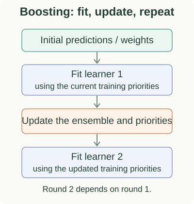

Boosting: Build a Model One Correction at a Time
Bagging trains models independently and averages their predictions. Boosting builds an additive ensemble $H(x) = \sum_{t=1}^{T} \alpha_t h_t(x)$ sequentially, choosing each new weak learner $h_t \in \mathcal{H}$ to minimize the loss left behind by the existing ensemble:

Core derivation
Subseries
Specialize $\mathcal{L}(H) = \sum_i e^{-y_i H(x_i)}$ to exponential loss: derive weighted classification error $\epsilon_t$, optimal vote $\alpha_t = \frac{1}{2}\ln\frac{1-\epsilon_t}{\epsilon_t}$, and multiplicative example reweighting.
Worked regression and classification trees: mean initialization, negative gradients ($y - F$ and $y - p$), leaf averaging, and Newton log-odds updates.
Second-order regularized objectives, similarity scores, split gain, pruning, system optimizations, and an end-to-end Python workflow.